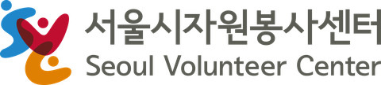

06 · 협력
다섯 기관, 하나의 작업장.
Good Hands Club은 지역 종합사회복지관, 사회적협동조합, 공공 자원봉사센터, 종교 비영리단체, 그리고 소셜벤처가 함께 만듭니다. 파일럿을 넘어 오래 지속되도록 설계했습니다.
방아골종합사회복지관
Bangahgol Community Welfare Center
서울 소재 종합사회복지관. 보건과 복지를 통합하는 학제적 접근과 지역 시민사회와의 협력으로 지역기반 돌봄·사회통합을 이끌어온 비영리 기관입니다.
bangahgol.or.kr ↗백년의숲 사회적협동조합
Hundred Year Forest Social Cooperative
협동의 삶과 노동 모델을 통해 지속가능성과 지역 자립을 실천하는 사회적협동조합.
forest100.org ↗한마음한몸운동본부
One Heart One Body Movement (OHOB)
1988년 고 김수환 추기경이 설립한 가톨릭 비영리단체. 국제개발협력, 국내 사회복지, 생명나눔운동을 통해 희망·생명·사랑을 실천합니다.
eng.ohob.or.kr ↗
서울시자원봉사센터
Seoul Volunteer Center
서울시 전역의 자원봉사를 조정하는 공공기관. 봉사 프로그램 기획과 함께 교육·연구·홍보 활동을 수행합니다.
volunteer.seoul.go.kr ↗
재니들
Zaneedle Inc.
‘보이는 수선(visible mending)’으로 새로운 의생활 문화를 만드는 소셜벤처. 수선 워크숍, ESG 프로그램, 지속가능한 순환 패션 콘텐츠를 운영합니다.
zaneedle.com ↗